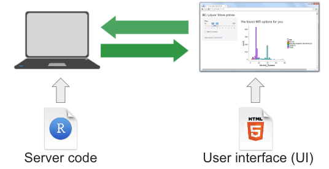
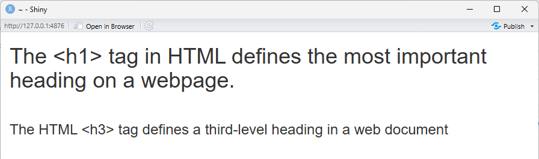
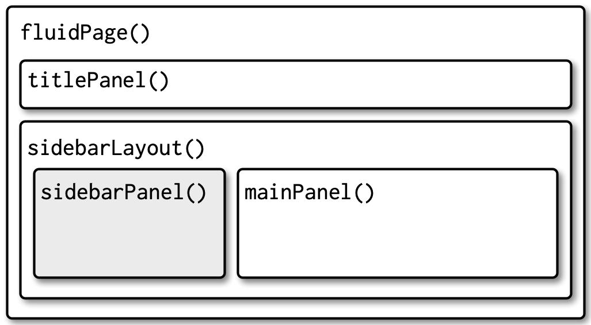
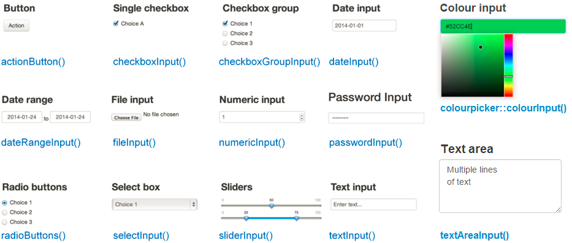
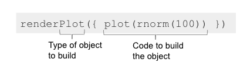
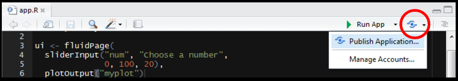
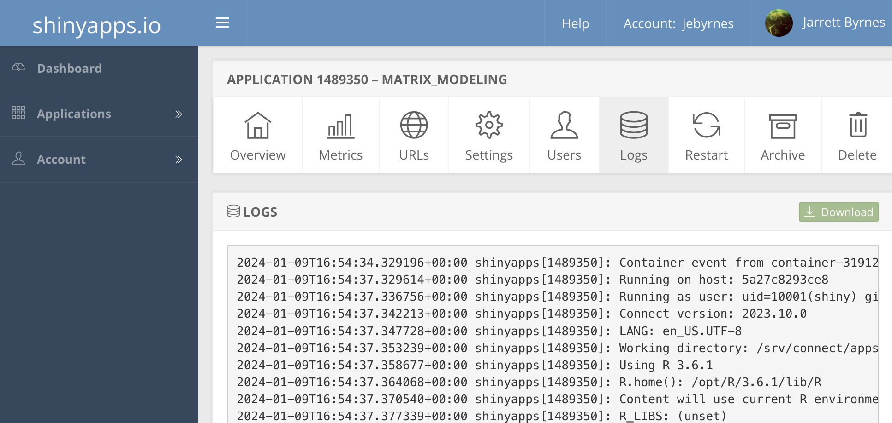

Content from Introduction to Shiny
Last updated on 2026-03-31 | Edit this page
Estimated time: 35 minutes
Overview
Questions
- What is a Shiny App?
Objectives
- Explain what a Shiny app can do.
- Demonstrate the basic building blocks of a Shiny app.
Introduction to Shiny
As researchers, we often want to make our work more accessible to a wider audience. While tools such as Quarto allow us to create rich static reports, they do not allow others to interact with our data and visualisations without learning R.
Shiny is an R package that makes it possible to build interactive web applications. These apps allow users to explore data, adjust inputs, and see results update in real time — without writing any R code themselves.
In this lesson, we introduce the basic structure of a Shiny app and begin building one step by step.

{alt=‘Diagram illustrating shiny components from Dean Attali’s book’}R Shiny apps are written in R code and consist of a user interface and the server. The user interface (ui) lets us create what the user will see and interact with. The server builds the outputs that react and update based on user inputs. Shiny apps run on an R process that serves content to a web browser. In practice, this may be a local R session, shinyapps.io, Shiny Server, or RStudio Connect.
Discussion: Example Shiny app websites
Shiny apps can range from simple interactive visualisations to complex applications used in production.
Take some time to explore these example apps built with Shiny.
Posit Shiny Gallery.
2024 Winners of the annual R Shiny Competition.
What do you like about them?
What do you not like about them?
What possibilities do you see for your own work?
Creating a Shiny app
Let’s start by creating a new project called shiny-qcif.
Within that project, create a folder called data and download or move
the lesson data into that folder. Next, create a new script called
app.R and save it in the same directory as your
.Rproj file.
Although you can put a Shiny app into any type of file initially, once you decide to use it with a Shiny Server, it’s important to note the server will only recognize one of two file configurations:
The entire app is contained within a file called
app.Rthat is found in the top-level directory.The app is split between
ui.Randserver.Rfiles which have code relating to those two parts respectively.
If you do not follow one of these configurations, your app will not be recognized by the server and will not load.
This is not to say you cannot place parts of your app’s
code in different R files. You can do this using the
source() function inside app.R, but we will
return to this later.
A Shiny project can be created in RStudio using the New Project
Wizard and selecting Shiny Application. This creates a
project with a pre-built Shiny app in an app.R script.
While this is a quick way to get started once you are familiar with
Shiny, here we will build the app from scratch so learners can see each
part as it is introduced.
The Anatomy of a Shiny app
A Shiny app has three essential parts: a ui, a server, and a call to shinyApp() that connects them. Most apps also include setup code at the top of the script to load packages and prepare data. Shown here together, code below will run and produce a blank app. We will introduce each part in turn and explain how they work.
R
# 1. Setup
library(shiny)
# 2. Define a User Interface
ui <- fluidPage()
# 3. Define a server
server <- function(input, output) {}
# 4. Call shinyApp() to run your app
shinyApp(ui = ui, server = server)
How do I actually run this?
Once you have saved your app in a file called app.R, you
can run it in RStudio by clicking the Run App button at
the top of the editor, or by running the script as you would any other R
code.
When the app is running: - A Shiny window will open showing your app - Your R console will be busy while the app is active
To stop the app, click the Stop button in RStudio or close the Shiny window.
If you make changes to the code, stop the app first, then re‑run it to see the updated version.
First, the setup.
R
# 1. Setup
library(shiny)
This code runs at the top of the app to load packages and to prepare objects - such as data or color palettes - that do not need to be created dynamically.
Second, the User Interface.
R
# 2. Define a User Interface
ui <- fluidPage()
Here, we use the fluidPage() function to create an
object called ui for later use. The function creates a
fluid page layout — but what does that mean?
Let us print the ui object for curiosity. You do not
normally inspect UI objects directly when building apps.
R
ui
Printing ui may look different depending on where you
run it. In RStudio you may see a blank page, and in the lesson you may
see no output. Both are expected: we have created the page layout, but
it contains no visible elements yet.
Although the page looks empty, fluidPage() has actually
generated HTML code. Shiny works by generating HTML in R and sending it
to a web browser to be rendered.
To see the HTML directly, we can print it as text.
R
cat(as.character(ui))
OUTPUT
<div class="container-fluid"></div>This output shows the HTML that fluidPage() creates. The
browser renders this HTML as a page, which is why we saw a blank layout
instead of text.
At the moment, the page contains only a container. As we add elements to the UI, more HTML will be generated and rendered.
Note that the parentheses () tell us this is a function.
Shiny user interfaces are built by combining functions that generate
HTML. Nesting these functions results in nested HTML elements, which the
browser renders as a page.
Third, we have the server:
R
# 3. define a server
server <- function(input, output) {}
At this stage, the server is an empty function with two arguments:
input and output. These are created by Shiny
for us. The input object reflects values sent from the user
interface, and the output object is where the server
defines what the app will display.
The final part is the call to Shiny, which runs the
app. This function takes the ui and server
objects as arguments. Although these objects could be given different
names, it is standard practice to call them ui and
server.
R
# 4. Call shinyApp() to run your app
shinyApp(ui = ui, server = server)
This final line runs the app by linking the ui and
server.
Be sure to save the app.R script.
- A Shiny app is an R program that generates interactive web content.
- A Shiny app has three required parts: a user interface, a server function, and a call that runs the app.
- The user interface defines what the app looks like, while the server defines how it behaves.
- Shiny works by generating HTML in R, which is rendered by a web browser.
Content from The Basics of a User Interface
Last updated on 2026-03-31 | Edit this page
Estimated time: 35 minutes
Overview
Questions
- How do we build a user interface in Shiny?
- How do we arrange inputs and outputs on a page?
Objectives
- Add components to a Shiny user interface.
- Use layout functions to organise a user interface.
Now that we understand the basic parts of a Shiny app, we will look more closely at the user interface (UI). In this episode, we will add elements to our basic app and learn how Shiny uses layout functions to arrange content on a page.
We will focus on adding generic text initially to understand how Shiny builds a page. Later, we will replace this text with inputs and outputs.
Adding text to the UI
Starting with the blank app, we can add plain text inside the
fluidPage().
R
# 2. Define a User Interface
ui <- fluidPage(
"Hello world" # this is new!
)
OUTPUT
{alt='Mostly blank white page displaying the text hello world'}
Any text placed in the UI is displayed on the page. Behind the scenes, Shiny is still generating HTML to describe that content.
R
cat(as.character(ui))
OUTPUT
<div class="container-fluid">Hello world</div>We can add text directly to the user interface in this way and let Shiny generate the HTML for us, or we can use a family of R functions that explicitly create HTML elements.
Let’s look at how to format text using Shiny’s UI functions.
Formatting Text with UI Functions
Shiny UI elements can be created using R functions, many of which correspond to HTML tags. For example, the page below will have one big header (h1), a line break (br), and a smaller header (h3). Note how every element is separated by a comma.
R
# 2. Define a User Interface
ui <- fluidPage(
h1("The <h1> tag in HTML defines the most important heading on a webpage."),
br(), # insert single line break
h3("The HTML <h3> tag defines a third-level heading in a web document"),
)

In the rendered app, the text now appears with different visual emphasis. Although we are calling R functions, each of these function calls adds one corresponding HTML element to the page, which the browser then renders in the order they appear.
Tag exploration
Shiny provides functions for many HTML text elements.
-Type names(tags) into the Console to see a list of HTML
tag functions -Type ?tags to get more information about
each one, such as whether it takes any additional arguments.
Challenge
Challenge: Add an additional element
Many HTML tags have corresponding Shiny functions. Choose one heading or paragraph‑style element (for example, h2(), h4(), or p()) and add it to the UI using a Shiny UI function.
One possible solution is shown below. Your choice of heading or paragraph may differ.
R
# 1. Setup
library(shiny)
# 2. Define a User Interface
ui <- fluidPage(
h1("The <h1> tag in HTML defines the most important heading on a webpage."),
br(), # insert single line break
h3("The HTML <h3> tag defines a third-level heading in a web document"),
h4("<h4> HTML example")
)
# 3. Define a server
server <- function(input, output) {}
# 4. Call shinyApp() to run your app
shinyApp(ui = ui, server = server)
The functions we have just used are convenience wrappers around HTML tags. They allow us to add elements to the user interface in a simple, sequential way.
However, Shiny also provides higher‑level UI functions for common page elements that understand page structure and layout.
Adding Layouts to the UI
Rather than hand-coding all of the HTML for a page, Shiny provides layout functions that create common interface structures for you.
Layout functions define the high‑level visual structure of an app. For example, a basic Shiny app often uses a sidebar layout, shown below.

To create this structure in our user interface, we start with a blank
fluidPage() and add a title panel and a sidebar layout,
which contains a sidebar panel and a main panel.
R
# 2. Define a User Interface
ui <- fluidPage(
titlePanel("This is the title panel"),
sidebarLayout(
sidebarPanel("This is the sidebar panel."),
mainPanel("This is the main panel")
)
)
Layout functions control the overall structure of the page, determining where content appears rather than what content is displayed.
Challenge
Challenge: Modify the layout content
Change the text inside the sidebar panel and the main panel to reflect what type of content you might place there in a real application.
One possible solution is shown below. Your choice of content may differ.
R
# 2. Define a User Interface
ui <- fluidPage(
titlePanel("This is the title panel"),
sidebarLayout(
sidebarPanel("put inputs here"),
mainPanel("put outputs here")
)
)
With the layout, or structure of the interface in place, we can now move on to adding inputs and outputs that allow users to interact with the app.
- The user interface (UI) defines what appears in a Shiny app.
- UI elements are created using ordinary R functions provided by Shiny.
- Many UI functions generate HTML elements that are rendered by a web browser.
- Layout functions define the overall structure of the app, while other UI functions define the content placed within that structure.
Content from Inputs and Outputs
Last updated on 2026-03-31 | Edit this page
Estimated time: 110 minutes
Overview
Questions
- How can users interact with a Shiny app?
- How do user inputs control what is displayed in the app?
Objectives
- Load data for use in a Shiny app
- Add a user input to control app behaviour
- Use input values in the server to update outputs
So far, we have built the structure of our app and created a user interface, but the app is still static. In this episode, we add user inputs and use them in the server to control what is displayed. This is where the app becomes interactive.
Before we can respond to user input, we need to prepare the data the app will use.
Prepare Data
This lesson uses data from an Employment Projection Model, which provides employment forecasts for South East Queensland. The dataset includes forecast information for 2041, such as occupations and industries associated with residents in each region.
Check that the csv file used in this workshop is located in your project’s data folder. Then add the following lines to the setup section of your app to load the data.
We also load the tidyverse package, which we will use for reading and manipulating the data.
R
# 1. Setup
library(shiny)
library(tidyverse)
bcc <- read_csv("data/bcc_occupation_count_2041.csv")
head(bcc)
Challenge
Challenge: Explore the data
Take a minute to inspect the dataset and identify variables that a user might reasonably control using an input object (for example, via a dropdown menu).
Examples of variables that could be controlled by a user include
region, suburb, and
occupation.
Variables that represent derived values or rankings (such as counts or ranks) are less suitable as direct user inputs at this stage.
Adding Inputs to the User Interface
Now that we have data, we need to give our user the tools to explore
it. Shiny provides a wide range of functions for creating
Inputs. These functions follow a consistent naming
pattern, using camelCase and ending in Input - such as
selectInput() and sliderInput().
The function then takes an inputID argument - a string
which will be used to refer to the input later on in the server. Then a
label argument, for what the user will see as the text
describing the input. Finally, a wide variety of input specific
arguments.
For our app, we will add a selectInput() that allows the
user to choose a region.
Looking at ?selectInput we see we will need the
following arguments:
-
inputId- a name for our input -
label- what the user sees -
choices- some choices select from. It’s good practice to use the data for these values, e.g. with theunique()function, to ensure you do not enter a value that is not found in the data.
Let’s insert an input object into our
sidebarPanel():
R
# 2. Define a User Interface
ui <- fluidPage(
titlePanel("This is the title panel"),
sidebarLayout(
sidebarPanel(
selectInput(
inputId = "region_select",
label = "Choose a region",
choices = unique(bcc$region)
)
),
mainPanel("put outputs here")
)
)
Save and run your app, and see that a dropdown menu with the different regions appears. Change the selected region. Notice that although the input value changes, the app output does not yet respond. This will change in the next section.
Input Widgets
This is just the start of what is possible with input widgets. Shiny provides many built‑in inputs, and additional packages extend these options further.

Adding Outputs to the User Interface
Next we need to tell Shiny where outputs should appear in the user
interface. Much like the *Input() functions, Shiny provides
a set of *Output() functions that define placeholders in
the UI where results will be displayed.
| Function | Output Type |
|---|---|
| plotOutput() | plot, ggplot |
| tableOutput() | table or data frame |
| textOutput() | text |
| htmlOutput() | HTML code |
Like inputs, these functions have a first argument - in this case
outputId which is a character string, and will be used
elsewhere in the app. Other arguments to these functions vary by output,
but can be used to do things like specify output window size, scaling,
and more.
Let’s add a tableOutput() to our app that will display
the top occupations of the selected regions. This will go in our
mainPanel():
R
# 2. Define a User Interface
ui <- fluidPage(
titlePanel("This is the title panel"),
sidebarLayout(
sidebarPanel(
selectInput(
inputId = "region_select",
label = "Choose a region",
choices = unique(bcc$region)
)
),
mainPanel(
tableOutput(outputId = "occupation_table") # this is new!
)
)
)
Render your app to make sure it works.
Notice that the table does not show up! This is expected: we have defined a placeholder in the UI, but we have not yet told the server how to produce the output.
To make this output appear, we now need to add server logic that tells Shiny how to create the table output based on the selected region.
Using input values in the server to produce outputs
It is now time to look more closely at the server. Recall that the server code looks like this:
R
# 3. define a server
server <- function(input, output) {}
At the moment, this is just an empty function. It is the code we place inside this function that gives the app its behaviour.
The server function takes two arguments: input and output. These are lists created by Shiny.
- The input list stores values coming from the input widgets defined in the UI.
- The output list stores results generated by the server that will be displayed in the UI.
The names used in the UI connect these lists together. For example,
the value selected using our selectInput() can be accessed
as input$region_select, and the output we defined using
tableOutput() will be referred to as
output$occupation_table.
Generating outputs in the server
To generate output in a Shiny app, we add elements to the output list
inside the server function. Each output is created using a
render*() function that matches the corresponding
*Output() function defined in the UI.
A useful pattern to remember is that:
-
*Output()functions define where output appears in the UI -
render*()functions define how that output is created in the server
Shiny provides a family of render*() functions, such as
renderPlot(), renderTable(), and others.
The code inside a render*() function is re‑run
automatically whenever its dependencies change. This allows the app to
respond dynamically to user interaction.

Note that the code insiderender*() functions is enclosed
in curly braces {}. These braces define a block of code
that Shiny runs to generate the output. You can think of them as
grouping multiple lines of code together and passing them to the
rendering function as a single unit.
We now modify the server to generate the output defined in the user interface.
To create our table, we use functions from the tidyverse to filter
the data based on the region selected by the user, using the value
stored in input$region_select, and then select the relevant
columns to display in the output table.
Specifically, we want to: - filter() the data to the selected region.
- group_by() to group rows by occupation. - summarise() to combine
duplicate occupations by summing occupation_count_2041 so
we return one row per occupation and drop the grouping. - arrange() the
data in descending order.
R
# 3. Define a server
server <- function(input, output) {
output$occupation_table <- renderTable({
bcc %>%
filter(region == input$region_select) %>%
group_by(occupation) %>%
summarise(
occupation_count_2041 = sum(occupation_count_2041, na.rm = TRUE),
.groups = "drop"
) %>%
arrange(desc(occupation_count_2041))
})
}
Save your script and run the app again. This time, the
occupation_table appears in the main panel and updates when
a different region is selected.
Discussion - How did it go?
And there you have it - a basic Shiny app! Take a minute to interact with the app by selecting different regions.
What do you learn from exploring the data this way?
How might you change or extend this app to make it more useful?
Challenge
Challenge:: Modify the output table
Update the server code so that the table displays only the occupation names, and no longer includes the occupation count column.
One possible solution is shown below.
Here, the select() function is used to drop the
occupation_count_2041 column.
R
# 3. Define a server
server <- function(input, output) {
output$occupation_table <- renderTable({
bcc %>%
filter(region == input$region_select) %>%
group_by(occupation) %>%
summarise(
occupation_count_2041 = sum(occupation_count_2041, na.rm = TRUE),
.groups = "drop"
) %>%
arrange(desc(occupation_count_2041)) %>%
select(occupation) # this is new!
})
}
In this episode, we built a working Shiny app by connecting user
inputs to server logic and producing outputs. We implemented this
interactivity by placing all of our data processing directly inside the
render*() functions.
This approach works well for simple workflows, where each output depends on a small amount of logic. However, as apps grow and multiple outputs begin to share the same calculations, this pattern can become repetitive and harder to maintain.
Shiny provides reactive expressions to help separate and reuse server logic more effectively. In the next episode, we introduce reactive expressions and show how they can be used to organise more complex apps.
- Shiny apps become interactive by connecting user inputs to server logic that produces outputs.
- Inputs are defined in the UI using
*Input()functions and accessed in the server through the input list. - Outputs have placeholders in the UI created with
*Output()functions and are generated in the server using matchingrender*()functions. - Code inside a
render*()function is re‑run automatically when the input values it depends on change. - Server logic controls how user input is translated into displayed output.
Content from Organising Server Logic with Reactive Expressions
Last updated on 2026-03-31 | Edit this page
Estimated time: 40 minutes
Overview
Questions
- Why does placing all logic inside rendering functions become limiting?
- How can we reuse server logic across multiple outputs in a Shiny app?
Objectives
- Identify repeated server logic in a Shiny app
- Use reactive expressions to separate and reuse server logic
- Refactor an app to make it easier to extend and maintain
Our App So Far
We now have a simple app that displays the top occupations in a
Brisbane City Council region. Our users can select a region using the
selectInput() function and display the corresponding
occupations with a tableOutput().
Notice all server logic is currently placed directly inside
renderTable(), , meaning the same data preparation would
need to be repeated for any additional outputs. This works well for a
simple app, but becomes harder to manage as apps grow.
What if we want to add another input or output?
Challenge
Challenge: Object types for input and output
Suppose we want to extend the app by adding a plot showing top occupations by region.
Which input and output-related functions would we need to: 1. Let the user select a region? 2. Display a plot in the app?
You do not need to write any code yet but do identify what part of the code the function belongs to.
One possible solution:
- Input (UI):
selectInput()to choose a region
- Output placeholder (UI):
plotOutput()
- Output rendering (server):
renderPlot()
Before introducing any new Shiny concepts, let’s extend the app using the approach we have used so far.
Extending the app without reactive expressions
We can extend the app using the approach we already know by adding an output to our app that will produce a plot of top occupations by region.
We already have the input as the region selected. Recall Shiny
outputs need an *Output() function defined in the user
interface and a render*() function for the server that
matches the corresponding output.
Additional output - user interface
Let’s add a plotOutput() to our app that will display
the top occupations of the selected regions. This will go in our
mainPanel():
R
# 2. Define a User Interface
ui <- fluidPage(
titlePanel("This is the title panel"),
sidebarLayout(
sidebarPanel(
selectInput(
inputId = "region_select",
label = "Choose a region",
choices = unique(bcc$region)
)
),
mainPanel(
tableOutput(outputId = "occupation_table"),
plotOutput(outputId = "occupation_plot") # this is new!
)
)
)
Run the app again and notice the plot does not appear. This is
expected: we have defined the plotOutput() placeholder in
the UI, but we have not updated the server.
Additional output - server with render*
Now let us add a renderPlot() object to plot the
occupations by region.
We want to prepare the data the same way we prepared the data for the
occupation_table and then produce a plot. Copy‑paste the
same filter → group → summarise →
arrange pipeline you used in renderTable().
Then add code for the plot:
- ggplot() to create the plot and map variables to the x and y axes, using reorder() to control the order of categories.
- geom_col() to draw a bar chart.
- coord_flip() to flip the axes so long labels are easier to read.
- labs() to add axis labels.
- theme_minimal() to apply a simple theme and increase the text size.
R
# 3. Define a server
server <- function(input, output) {
output$occupation_table <- renderTable({
bcc %>%
filter(region == input$region_select) %>%
group_by(occupation) %>%
summarise(
occupation_count_2041 = sum(occupation_count_2041, na.rm = TRUE),
.groups = "drop") %>%
arrange(desc(occupation_count_2041))
})
output$occupation_plot <- renderPlot({ # this is new!
bcc %>%
filter(region == input$region_select) %>%
group_by(occupation) %>%
summarise(
occupation_count_2041 = sum(occupation_count_2041, na.rm = TRUE),
.groups = "drop") %>%
arrange(desc(occupation_count_2041)) %>%
ggplot(aes(x = reorder(occupation, occupation_count_2041),
y = occupation_count_2041)) +
geom_col(fill = "steelblue") +
coord_flip() +
labs(x = "Occupation", y = "Forecast employment (2041)") +
theme_minimal(base_size = 17)
})
}
Run the app again. You should now see two outputs, both of them updating when the user changes a selection.
Take a moment to compare the code inside renderTable()
and renderPlot(). What parts of the logic appear in both
places?
Discussion: Notice the pattern
Take a close look at the server code. Notice that each output repeats a similar pattern to prepare the data: filter, group, summarise, and arrange.
What would happen if we wanted to change the filtering rule for both outputs later?
Reactivity
At its core, Shiny is built around reactivity. Reactivity means that when a value changes, anything that depends on it is automatically updated.
In our app, output$occupation_table uses the current
value of input$region_select. When the user changes the
selected region, Shiny re-runs the code that depends on
input$region_select, and the table updates.
This is different from how ordinary R objects behave. For example:
R
x <- 5
y <- x+10
x <- 10
y
Note that y is still 15, because R does not
automatically recompute y when x changes.
In the next section, we introduce reactive()
expressions, which will allow us to compute shared results once and
reuse them across outputs.
Additional output - server with reactive()
expressions
So far, we have placed all of our data preparation directly inside
each render*() function. This works, but as soon as we have
multiple outputs (for example, a table and a plot), we end up repeating
the same data preparation steps in multiple places.
To avoid this repetition, we can move the shared data preparation
into a reactive() expression. A reactive
expression is like a reusable “recipe” that is automatically
re-run when its inputs change.
Here, we create a reactive expression called
summary_data that prepares the occupations for the selected
region. It’s common to name reactives as nouns, not verbs, because they
represent values
R
# 3. Define a server
server <- function(input, output) {
summary_data <- reactive({ # this is changed!
bcc %>%
filter(region == input$region_select) %>%
group_by(occupation) %>%
summarise(
occupation_count_2041 = sum(occupation_count_2041, na.rm = TRUE),
.groups = "drop"
) %>%
arrange(desc(occupation_count_2041))
})
# code omitted for teaching purposesBecause summary_data is reactive, we call it like a
function with no arguments: summary_data(). We can now
reuse it in multiple outputs. For example, the table output becomes:
R
# 3. Define a server
server <- function(input, output) {
summary_data <- reactive({
bcc %>%
filter(region == input$region_select) %>%
group_by(occupation) %>%
summarise(
occupation_count_2041 = sum(occupation_count_2041, na.rm = TRUE),
.groups = "drop"
) %>%
arrange(desc(occupation_count_2041))
})
output$occupation_table <- renderTable({ # this is changed!
summary_data()
})
# code omitted for teaching purposesWriting the server logic in terms of reactive()
expressions means we can reuse the summary_data reactive value
elsewhere, like in the server logic for the plot output.
Challenge
Challenge: Reuse summary_data() in the plot output
Modify the app by replacing the data preparation code inside the plot
with the reactive expression summary_data().
One possible solution is shown below.
R
# 3. Define a server
server <- function(input, output) {
# code omitted for teaching purposes
output$occupation_table <- renderTable({
summary_data()
})
output$occupation_plot <- renderPlot({ # solution
summary_data() %>% # reuse reactive()
ggplot(aes(x = reorder(occupation, occupation_count_2041),
y = occupation_count_2041)) +
geom_col(fill = "steelblue") +
coord_flip() +
labs(x = "Occupation", y = "Forecast employment (2041)") +
theme_minimal(base_size = 17)
})
}
Before introducing reactive expressions, we extended the app by adding a second output and placing all of the required data processing directly inside renderPlot(). While this approach works, it required repeating the same data preparation steps—filtering, grouping, summarising, and arranging—inside multiple rendering functions.
This duplication makes apps harder to maintain as they grow. Any change to the data preparation logic would need to be made in every output that depends on it. By using reactive() expressions, we can compute shared results once and reuse them across multiple outputs, making our server code simpler, clearer, and easier to extend.
From here, people usually look at improving layout and styling, organising larger apps with modules, or figuring out how to share their app. We didn’t cover those today, but now you have the foundation to explore them.
- Reactivity is central to how Shiny apps update in response to changes in user input.
- Code inside
render*()functions is automatically re‑run when its reactive dependencies change. - Repeating the same data preparation logic across multiple outputs can make apps harder to maintain.
-
reactive()expressions allow shared server logic to be computed once and reused across multiple outputs.
Content from Making Shiny Apps Public
Last updated on 2026-03-31 | Edit this page
Estimated time: 35 minutes
WARNING
Warning in file(filename, "r", encoding = encoding): cannot open file
'setup.R': No such file or directoryERROR
Error in `file()`:
! cannot open the connectionOverview
Questions
- How do I show the world my Shiny apps?
Objectives
- Publish your Shiny app
Shinyapps.io
In order to make your Shiny apps available to the world, we need to put them somewhere publicly accessible on the Worldwide Web. In order to do this, we need a Shiny Server - a server running R that knows how to deploy Shiny apps. While those of you with a server and know-how can deploy your own Shiny Server (it’s free!), that’s generally not an option for everyone.
For our purposes, we’re going to use Posit’s shinyapps.io, a free Shiny App hosting site that is integrated into R Studio.
Sign up for shinyapps.io
Go to shinyapps.io and take the steps to register for an account.
Other hosting options if you don’t run a server
There are other ways, but they require more technical expertise. If you are at or affiliated with a university, contact your scientific computing staff. They can setup a Shiny Server and Rstudio Server so you can easily deploy apps by uploading them.
If you don’t have that option, and shinyapps.io is not enough for you, you can deploy your app with Heroku or Digital Ocean. It’s going to take some work, patience, and desire to learn more about systems administration. Skills well worth learning.
Deploying Your App to Shinyapps.io

How to Publish your Shiny App from Dean AttaliDeploying your app from within RStudio is fairly simple. Within
Rstudio, click the funky botton noted above (to the left of your code
pane) and select Publish Application. You will be walked
through steps to connect your instance of RStudio to shinyapps.io and then the app will
upload.
Run your app. If it has a problem, log into shinyapps.io and inspect the logfile for your app to see what went wrong.

- Use shinyapps.io in conjunction with Rstudio to make your app public.